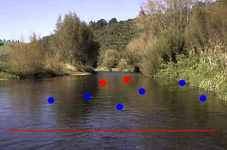

ティップス
キャストの前に 鱒へのアプロ―チ （その２）
引き続き、流れに潜む、鱒たちへのアプロ―チについて。
この写真は、比較的大きな川の、だだっ広いトロ場のいちばん下流、すぐに瀬が続いている場所を、上流に向かって写したものです。

春先、あるいは秋口の穏やかに晴れた日には、水中、あるいは水面で昆虫を捕食する鱒が、こうした浅場に出て来ます。
これまでの体験では、流れが速くなる瀬の中（赤線より下流）に鱒がいたことはあまり無いのですが、淵でもなく瀬でもないという赤●のあたりには、かなりの確率で鱒が定位していました。
さらにやっかいなコトには、鱒の活性が一番高い時間帯には、青●のあたりにまで鱒がウロウロ出回っていることがあります。こうした場合、流れに足をちょっと踏み入れただけで鱒を驚かしてしまいます。
ライズがある場合、あるいは、晴れた日の順光線のもと、鱒を視認できる場合はいいのですが、そうでない場合は非常に厄介な状況になります。それらしいポイントを探りながら釣り上がって行こうと思うと、これだけ川幅が広く、流れ込みまで50から100m以上もあるような場所では、ここを攻めるだけで１時間近くかかってしまうでしょう。(#^.^#)
現状で考えられるアプロ―チとしては、
- まず赤線ぐらいの位置の岸辺から、慎重に鱒の影、水面の波紋を探す。条件がよければ、５分ぐらい見つめていると、どこかしらにライズが起こる。
- ライズもなく、曇り空で鱒が見つけにくいときは、静かに流れの中に踏み入れ、慎重に川の中央まで歩いて行く。
- 最も鱒の居そうな筋、その左右１ｍ、２ｍぐらいを探って釣り上がる。
- 水深が深くなってウェ―ディングしにくくなったら、流れてくる主流の位置、自分のキャストしやすい位置、風向きなどを考慮して、左右どちらかの岸沿いを遡行する。
- 仮に一つのライズを発見しても、鱒が移動しながら捕食していたり、そのライズの周辺にも鱒のいることがあるので、不用意に近づかず、ライズの下流側から丁寧に攻める。
といったことでしょうか。
写真のような場所は、とても神経を使いますが、うまく行ったときの喜びと興奮は、格別です。ライズが見えていながら釣れなかったときの悔しさは言うまでもありません。（笑）
ティップス 目次へ
サイトマップ
ホームへ
お問い合わせ